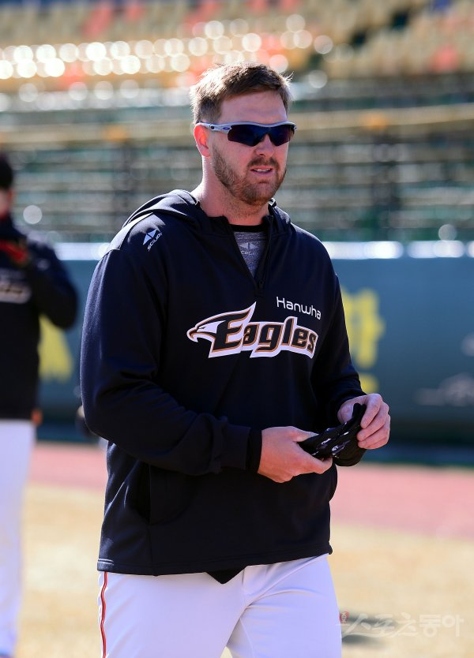

2020 한화이글스 외국인선수 명단
워윅 서폴드(Warwick Saupold, AUS)
서폴드는 지난시즌 한화의 에이스 역할을 하며 재계약에 성공했다.
지난시즌 한화의 공격력은 최하위권 수준이었는데, 서폴드가 타선의 지원을 받았다면 최소 2~3승은 더 거두었을 만큼 시즌 내내 좋은 모습을 보여주었다. 거기에 한화의 전체 선발투수 중 유일하게 1년 내내 선발 로테이션에 자리잡았던 만큼 내구성과 실력 모두 검증을 마쳤다. 내년시즌을 위해 조국인 호주의 프리미어12 국가대표 소집도 거부할 만큼 팀에 애착을 보이는 것도 팬과 구단 모두에게 플러스 요인인 것은 덤. 이상하리만치 만나면 고전했던 삼성전 역시 시즌 막판에 극복해내며 리그에서 가장 기복이 적은 투수 중 하나로 손꼽히게 됐다.
동료 외국인선수 호잉과 채드벨 역시 모두 팀에 남음으로써 서폴드에게 더 이상 적응이라는 단어는 필요없게 됐다. 단, 적응이 필요 없다는 것은 충분한 활약을 기대한다는 것으로 만일 기대에 미치지 못한다면 한화의 내년시즌 역시 기대치가 많이 떨어질 것이다.